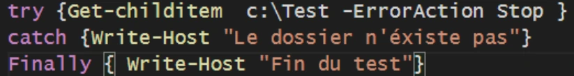
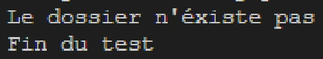
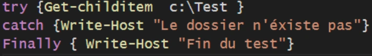
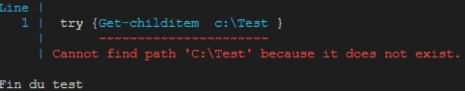
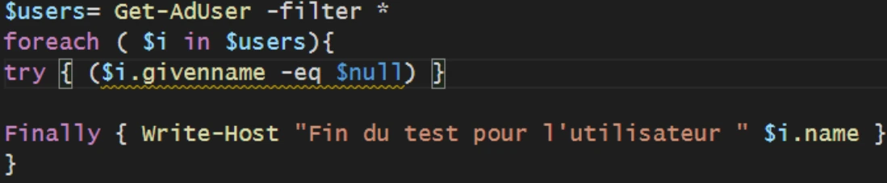
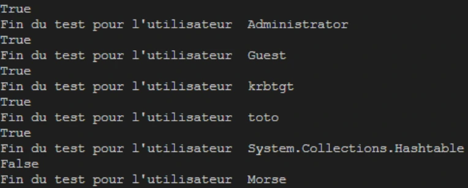

Transcription du support du Drive. Les formulations historiques et les exemples du document sont conservés. Les valeurs d’accès du laboratoire sont indiquées comme « fourni par le formateur ». Les adresses de messagerie personnelles utilisent example.com.
Démonstration 06 du module 5
L’objectif de cette démonstration est de vous présenter la structure dédiée à la gestion des erreurs. Cette structure exécute des commandes en fonction du résultat d’un test initial.
Le paramètre ErrorAction avec la valeur Stop permet à la valeur contenue dans la structure
Catch de s’exécuter sans afficher le message d’erreur.
Sans le paramètre ErrorAction la structure Catch n’est pas exécutée et le message d’erreur
apparaît en sortie.La structure Try-Catch-Finally s’utilise pour effectuer des tests sur des objets ou des valeurs de propriétés des objets. Pour faciliter ces tests, il est courant de coupler la structure avec le Foreach.




On utilise uniquement la structure Try pour effectuer le test sur une propriété.
A chaque utilisateur testé, on affiche un message de fin de test.
Pour les utilisateurs qui n’ont pas de prénom, la réponse du test est « Vraie », pour les autres, la réponse « Faux » est envoyée.

